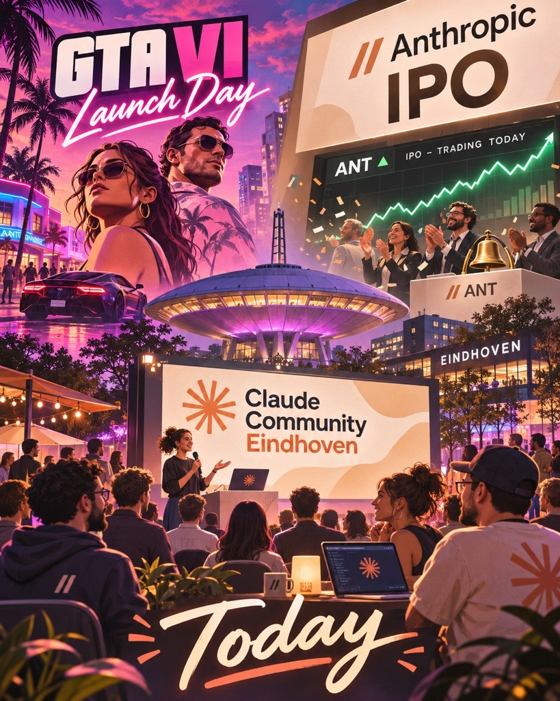
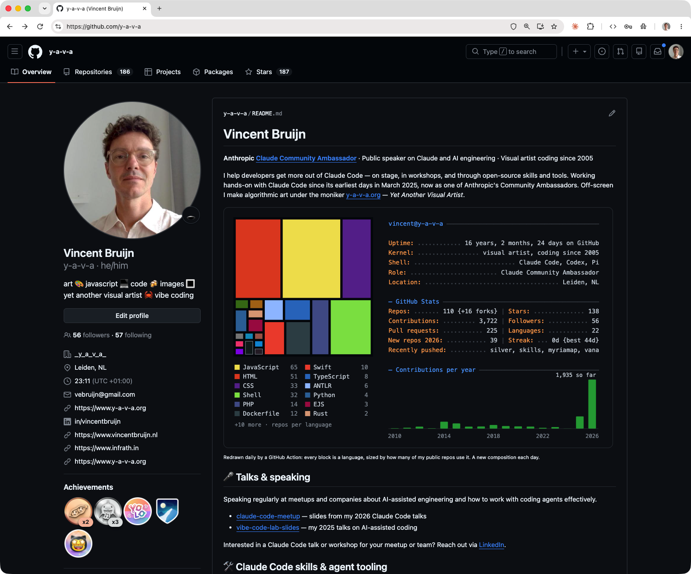
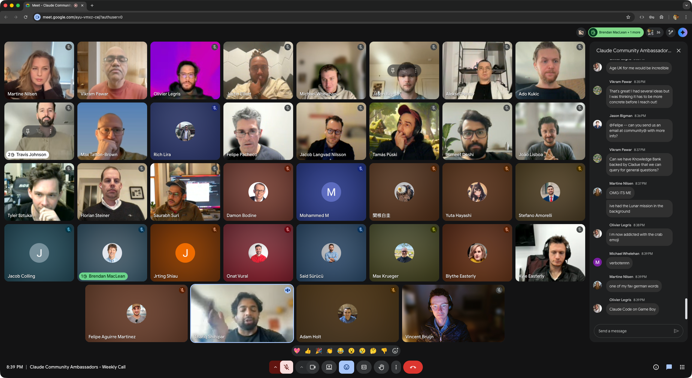
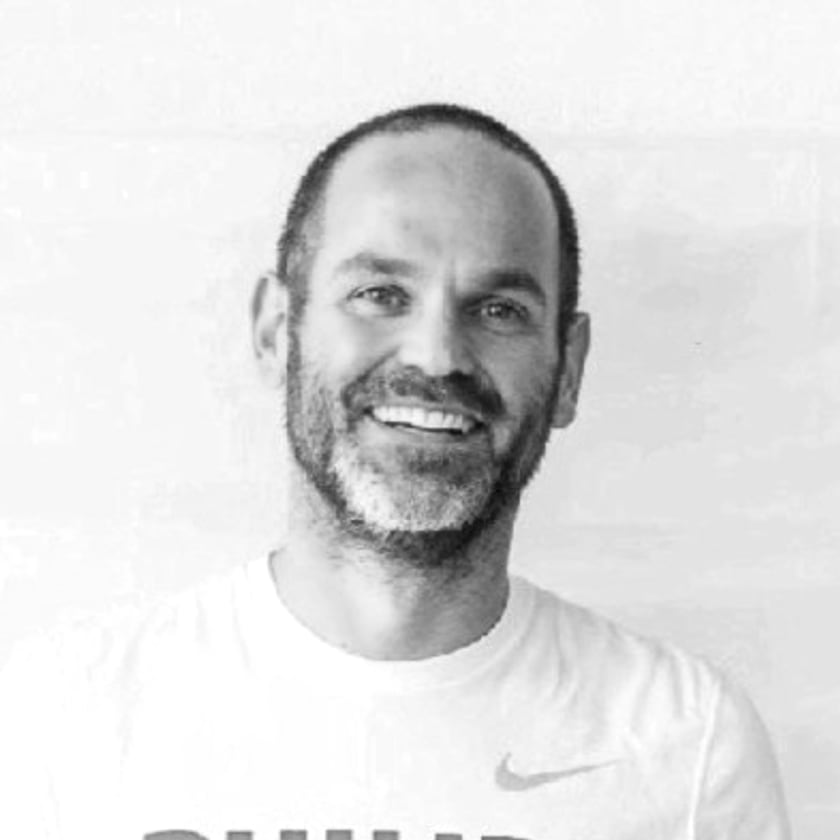

Claude Community
Thursday 2026-11-19 · Pipple

We're taking photos tonight. Tell us if you'd rather not be in them.


HEAD OF SPORT SCIENCE & ANALYTICS · PSV
A platform built with Claude that brings together movement analysis, match data and training design
How it works in daily practice at one of Europe's top football clubs, with a live demo.
AI ENGINEER (UX) · HOLLAND INNOVATIVE
Two-time AI hackathon winner. Focused on tech, systems thinking and user-centered design.

FREELANCE SOFTWARE SPECIALIST
Passionate about IoT, AI, product development and prototyping.
SENIOR SOFTWARE ENGINEER · PROMEXX
AI-first development. Vibe-code cleaning specialist.
Give a talk at the next meetup
Big or small, demo or story — we want to hear it.
Reach out → linkedin.com/in/vincentbruijn
repo
github.com/y-a-v-a
site
vincentbruijn.nl
Vincent Bruijn · Claude Community Ambassador